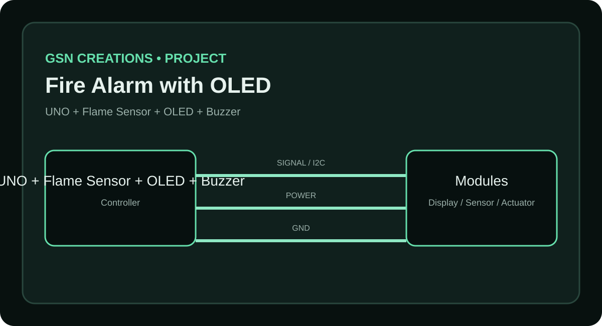
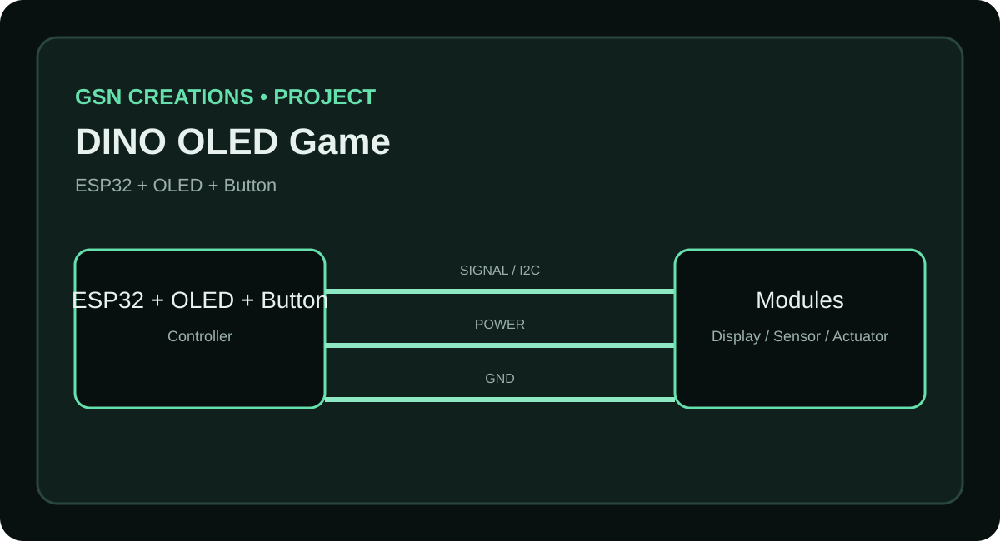

ESP32 OLED Song Animation
Components, connections, working process, scope and circuit reference.
Open full project →Welcome to GSN Creations — a practical project library for makers. Find the project idea, components, wiring, working process, circuit reference and downloadable maker resources.
// GSN Creations
ESP32 + OLED + Sensors
project.start();
learn();
build();
share();Components, connections, working process, scope and circuit reference.
Open full project →
Components, connections, working process, scope and circuit reference.
Open full project →
Components, connections, working process, scope and circuit reference.
Open full project →Each project page is designed to be simple: understand the idea, check the parts, view the circuit, download the complete project ZIP, and start building.
Explore the library or follow GSN Creations for new DIY builds and experiments.
Learn how video frames become 128×64 OLED bitmap data and how to upload it to ESP32.
Read guide →Understand I2C wiring, initialization and the frame-drawing flow.
Read guide →Build a project page with components, connections, process, scope and downloads.
Read guide →